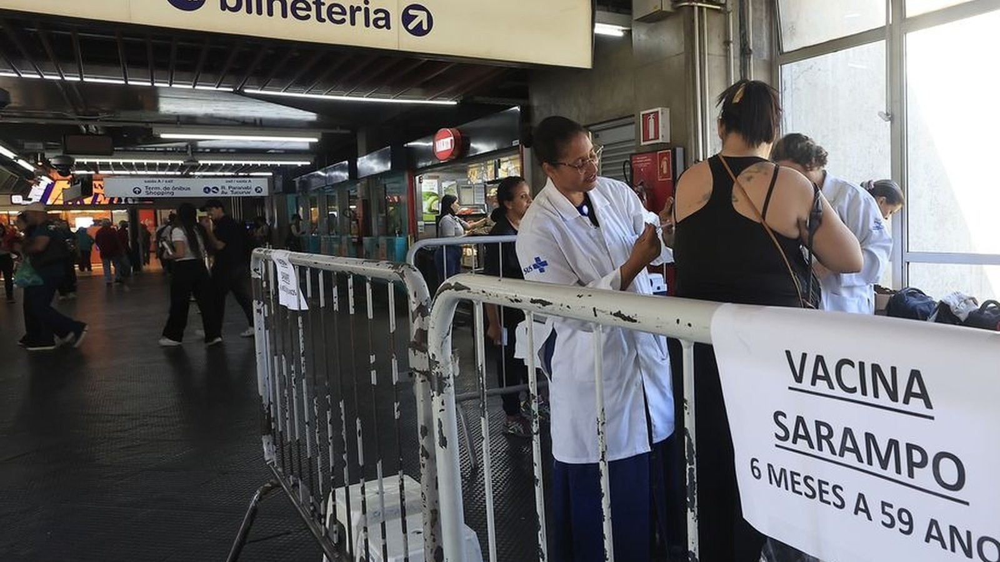

Itapema · Saúde
Itapema · SaúdeSábado tem Dia D de vacinação com todas as UBS abertas, e é para qualquer idade
O dia em que Itapema abriu as unidades dentro desta campanha.
A campanha confere a caderneta de crianças e adolescentes menores de 15 anos e aplica o que estiver faltando, inclusive a tríplice viral. O motivo do reforço são os casos de sarampo registrados em São Paulo desde junho.
Em 30 segundos · Modo de Leitura, formato original Santa Informa
A Campanha Nacional de Multivacinação vai até terça-feira, 1º de setembro.
Ela confere a caderneta de menores de 15 anos e aplica o que falta.
Entra aí a tríplice viral, que protege contra sarampo, caxumba e rubéola.
O Brasil confirmou 27 casos de sarampo em 2026.
24 deles vêm de uma cadeia de transmissão iniciada em junho em São Paulo.
Em 2025 foram 38 casos importados ou ligados a importação.
O país segue livre da circulação endêmica da doença, diz o ministério.
Criança toma duas doses, aos 12 e aos 15 meses.
Quem tem até 29 anos e não comprova vacina toma duas doses, com 30 dias de intervalo.
De 30 a 59 anos, é uma dose.
Poder PúblicoPublicada em Redação Santa Informa

Quem deixou a caderneta de vacinação parada tem até terça-feira, 1º de setembro. É o último dia da Campanha Nacional de Multivacinação, que confere a situação vacinal de crianças e adolescentes menores de 15 anos e aplica as doses que estiverem faltando, incluindo a tríplice viral. O Ministério da Saúde reforçou o chamado nesta sexta-feira por causa dos casos de sarampo registrados em São Paulo nos últimos meses.
O Brasil confirmou 27 casos de sarampo em 2026. Desses, 24 estão ligados a uma cadeia de transmissão que começou em junho no estado de São Paulo, sendo 21 na capital, dois em São Bernardo do Campo e um em Guarulhos. Os outros três não têm relação entre si (dois em São Paulo e um no Rio de Janeiro) e já foram considerados encerrados, depois de 12 semanas sem nova ocorrência associada. Em 2025 tinham sido 38 casos, todos importados ou relacionados à importação. "Com isso, o Brasil segue livre da circulação endêmica do sarampo, mesmo diante do aumento de casos registrado em outros países das Américas", diz o ministério.
A tríplice viral protege contra sarampo, caxumba e rubéola. Para criança, o calendário de rotina prevê duas doses: a primeira aos 12 meses e a segunda aos 15 meses. Quem tem até 29 anos e não foi vacinado, ou não tem como comprovar, deve tomar duas doses com intervalo mínimo de 30 dias. De 30 a 59 anos, é uma dose. Nos três municípios paulistas com transmissão ativa, o ministério recomendou ainda a dose zero para bebês de 6 a 11 meses, que é proteção extra e não substitui as doses de rotina.
A campanha é nacional, e as prefeituras daqui já se mexeram dentro dela. No Dia D de 22 de agosto, Bombinhas aplicou 324 doses abrindo quase todas as unidades e distribuindo a carteira de vacinação em formato de álbum de figurinhas, com 36 figurinhas de super-herói, uma a cada vacina tomada. Em Itapema, o Santa Informa noticiou que as UBS abriram no mesmo sábado, das 8h às 16h, sem fechar ao meio-dia. Quem não foi naquele dia ainda alcança o prazo, mas alcança até terça.
O resumo de 30 segundos está no topo e a versão completa é o texto acima. Aqui ficam as três leituras da casa sobre o mesmo assunto.
Clara, a otimista
Vinte e sete casos num país de duzentos e catorze milhões de pessoas é número pequeno, e é pequeno porque alguém trabalhou para que ficasse assim. Vigilância, campanha e gente aplicando dose em posto de metrô.
E gostei da sacada de Bombinhas: transformar a carteira de vacinação em álbum de figurinhas. Criança que junta figurinha puxa o adulto pela mão até o posto. É simples, é barato e resolve o problema real, que é fazer a família sair de casa.
Seu Prudêncio, o criterioso
Merece atenção o prazo. A campanha termina na terça e o fim de semana está aí, o que na prática deixa pouco tempo útil para quem trabalha de segunda a sexta. Campanha com data curta pega justamente quem tem menos horário livre.
Vale acompanhar dois números que o ministério não publicou junto: a cobertura da tríplice viral por município e quantas doses foram aplicadas nesta campanha em Santa Catarina. Sem isso, a gente não sabe se aqui o problema é falta de vacina ou falta de gente indo buscar. Uma sugestão útil para o leitor: procure a caderneta hoje, ainda no sábado, e não na terça de manhã. Caderneta perdida costuma aparecer no fundo da gaveta com três dias de procura.
E é justo reconhecer o que está funcionando. Campanha nacional com data-limite, dose zero onde há transmissão ativa e um caso dado por encerrado só depois de doze semanas de silêncio mostram um sistema que está olhando o problema de perto. Doze semanas é critério rigoroso, e usar critério rigoroso é o que segura a doença longe.
Caco, o sarcástico
Caderneta de vacinação é aquele documento que a gente guarda com muito cuidado num lugar tão seguro que nunca mais encontra.
Descobrir aos trinta e poucos anos que você precisa de uma dose de tríplice viral é uma experiência humilhante. A gente acha que vacina é assunto de criança até o dia em que a tabela diz o contrário.
Posto de vacinação na saída da estação de metrô. Genial. Único lugar do Brasil onde a pessoa já está parada na fila mesmo, então tanto faz.
Fontes: Agência Brasil, reportagem de Paula Laboissière publicada em 29 de agosto de 2026, às 11h49, com edição de Fernando Fraga, informando o prazo da Campanha Nacional de Multivacinação até 1º de setembro, o público de menores de 15 anos, os 27 casos de sarampo confirmados em 2026 com a distribuição por município, os 38 casos de 2025, o prazo de 12 semanas para encerrar um caso, a frase do Ministério da Saúde reproduzida no texto, o esquema da tríplice viral por faixa etária e a recomendação de dose zero em São Paulo, Guarulhos e São Bernardo do Campo. As 324 doses do Dia D e o álbum de figurinhas saem da Prefeitura de Bombinhas, em publicação sobre o sábado 22 de agosto. O horário das UBS de Itapema no Dia D sai da nossa matéria anterior, linkada no texto. A foto é da Agência Brasil, de Paulo Pinto, sem marca de reprodução proibida, e foi recortada na lateral direita para tirar do primeiro plano o rosto de um passante.
Itapema · SaúdeO dia em que Itapema abriu as unidades dentro desta campanha.
Onde tirar dúvida de saúde fora do horário da unidade.
Outra frente de vigilância em saúde no litoral.